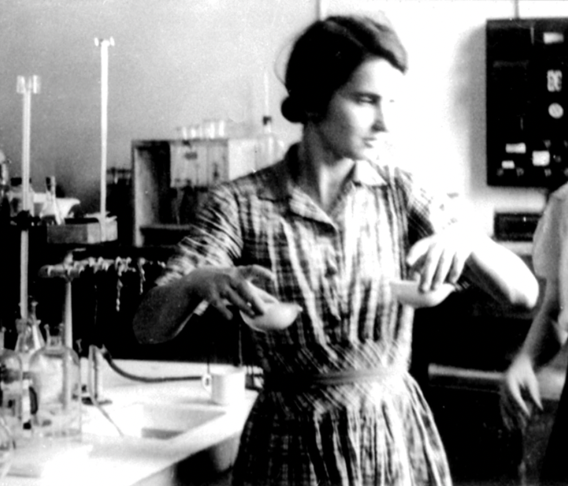
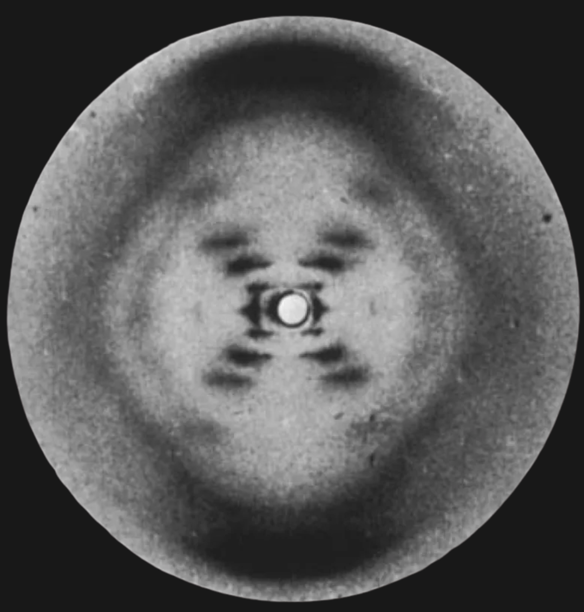
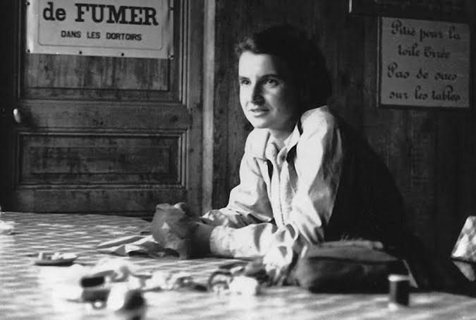
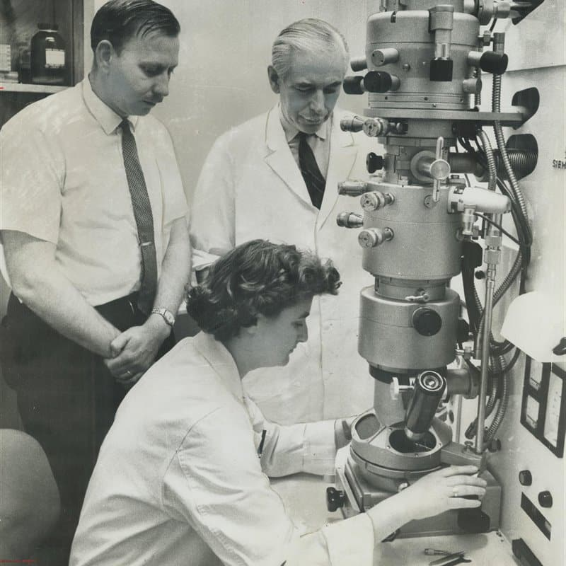

En la primera sección del libro Principios de Bioquímica de Lehninger (sin dudas el libro de texto más leído y consultado por bioquímicxs, biólogxs moleculares y biotecnólogxs, entre otrxs), incluso antes del prólogo, existe un apartado que se titula "Nota sobre la naturaleza de la ciencia". En este apartado en el que los autores vuelcan su visión acerca de cómo debería enseñarse o incluso hacerse la ciencia, mencionan aquellos hitos que consideran fundacionales de la biología molecular, en particular:
Resulta imperativo remarcar que ésta, una de las primeras aseveraciones del libro más utilizado en el dictado de la bioquímica en todo el mundo, es en sí misma una gran mentira.
En este fragmento podemos analizar al menos tres cuestiones. Por un lado se le atribuye el descubrimiento de la estructura del ADN sólo a los investigadores James Watson y Francis Crick. Además, se pondera su trabajo con modelos y cálculos despreciando las evidencias que dieron lugar a dichos modelos, obtenidas por la investigadora Rosalind Franklin. Finalmente, se la invisibiliza al ni siquiera mencionarla, robándole el crédito (una vez más) y reemplazando su nombre por "otros científicos", oportunamente, el plural del español es de género masculino.
Rosalind Franklin nació en Londres el 26 de julio de 1920. Perteneció a una familia de muy buena posición económica, pudiendo acceder a una excelente educación. En su hogar aprendió a pensar por sí misma y a defender sus ideas y convicciones. La pequeña Rosalind comenzó a destacarse a muy temprana edad, distinguiéndose en ciencias, latín e idiomas extranjeros. A sus 18 años, Rosalind entró en la Universidad de Cambridge para estudiar Ciencias Naturales. Allí además de destacarse como estudiante, participó en varias de las sociedades estudiantiles como activista. Se graduó luego de tres años de estudio (los últimos dos durante la segunda guerra mundial) y recibió una beca de la Universidad que le permitió iniciar su doctorado. Se doctoró en 1945, coincidiendo con el fin de la guerra, lo que le permitió una mayor libertad al momento de elegir temáticas de investigación para su etapa postdoctoral.

Gracias a sus contactos obtenidos en conferencias científicas, ,logró acercarse al equipo presidido por Jaques Mering que mediante difracción de rayos X estudiaba la estructura de sustancias amorfas. Fue así como en 1947 Rosalind se integró, como investigadora postdoctoral, a dicho equipo en el Laboratorio Central de Servicios Químicos del Estado en París y se convirtió en una experta en el estudio de estructuras mediante difracción de rayos X. En enero de 1951, regresó a su país e ingresó al laboratorio de biofísica del King's College en Londres. Dada su experiencia en difracción de rayos X, John Randall quién dirigía la Unidad de Biofísica, decidió que aplicara dicha tecnología al estudio de la estructura del ADN.
Aquí vale la pena detenerse. Es importante mencionar que ese trabajo ya había sido iniciado por Maurice Wilkins y su asistente Gosling pero con equipos poco avanzados. Randall deliberadamente decidió no comunicarle a Wilkins su decisión de involucrar a Rosalind en esos estudios, marcando el inicio de un enorme conflicto entre ambos científicos. Si bien el escándalo del que hablaremos de forma directa más adelante fue protagonizado por otros actores, es importante destacar el rol de Randall quien sostenía que la competencia entre científicxs era algo deseable y que constituía la fuerza motora que hacía avanzar al conocimiento científico. Una línea de pensamiento que no era exclusiva de Randall y que lamentablemente se sostiene hoy en día.
Así fue como el 6 de mayo de 1952, Rosalind Franklin capturó la imagen que cambiaría la manera de comprender el mundo y descifraría uno de los secretos de la vida hasta ese momento. En esa famosa fotografía, la fotografía 51, se pudo evidenciar la estructura que formaba el ADN en un contexto acuoso, la posteriormente llamada conformación B del ADN.

La fotografía 51 rápidamente se convirtió en un hallazgo histórico, aunque también en la protagonista del robo que sucedería un tiempo después. Basada en sus conocimientos de química, de la composición del ADN y de técnicas matemáticas Franklin sacó varias conclusiones de la foto y concluyó que las cadenas tenían forma helicoidal y que cada vuelta de la hélice involucraba a 10 nucleótidos, además que las bases estaban orientadas hacia el interior de la hélice y los fosfatos hacia el exterior, concluyendo que el ADN tenía dos cadenas.
A pesar de sus avances, la estancia de Rosalind en el King's College se hacía extremadamente incómoda por su tensa relación con Wilkins. Sin embargo, esta hostilidad se vería incrementada aún más por la presencia de James Watson quien si bien no tenía una posición fija en Cambridge, trataba de averiguar por todos los medios de qué se trataban los datos de los estudios sobre el ADN que Rosalind y Gosling estaban realizando.
Watson estaba obsesionado por descubrir la estructura del ADN y se asoció con Francis Crick, quien buscaba nuevos horizontes para sus investigaciones en la universidad. Luego de escuchar la presentación de Rosalind sobre sus hallazgos y de "verse inspirados" con la misma, ambos decidieron poner manos a la obra en el análisis de la estructura. Su primer intento fue un rotundo fracaso, ya que dados sus escasos conocimientos de Química lograron una triple hélice, que nada tenía que ver con la estructura real del ADN.
Luego de la partida de Rosalind a otro instituto de investigación, y a pesar de que continuaba siendo la directora de tesis de Gosling, éste volvió a trabajar con Wilkins y le mostró la foto 51 ocho meses después de haber sido tomada. Wilkins entregó la foto a Watson, consumando el robo que condujo a la estructura del ADN que hoy conocemos. Watson entonces postuló que las bases en el interior de la hélice estaban unidas por puentes de hidrógeno. Por su parte, Crick vió en el Medical Research Council un informe de Rosalind que le ayudó a deducir que las cadenas complementarias estaban orientadas en direcciones opuestas. Esas evidencias obtenidas por Rosalind fueron las bases fundacionales que les permitieron formular la estructura de la doble hélice.
El artículo titulado "El caso de Rosalind Franklin" y publicado en 2014 en la revista Mujeres Con Ciencia realiza un agudo análisis sobre lo sucedido en relación al descubrimiento de la estructura de la doble hélice de ADN y cómo esta historia tiene una profunda base machista y patriarcal. Hace algo más de 60 años, Watson y Crick publicaron el artículo en Nature con su propuesta de estructura para el ADN. En el último párrafo y entre otros, citaban a Rosalind Franklin y le agradecían sus resultados experimentales no publicados e ideas. Años más tarde, en el libro La doble hélice, una crónica muy personal del descubrimiento de la estructura del ADN, James Watson escribió sobre ella afirmando que el mejor lugar para una feminista era el laboratorio de otra persona. Y todavía unos años más tarde, Francis Crick escribió que, en el King's College de Londres, donde Rosalind Franklin trabajaba, había restricciones muy irritantes –no podía tomar café en la sala de profesores de la facultad porque estaba reservada para los hombres- pero solo eran trivialidades, o al menos así me lo parecían entonces". Watson y Crick se referían a Rosalind Franklin como una feminista que se quejaba de trivialidades.
Cabe destacar que esos "resultados no publicados" obtenidos por Rosalind Franklin eran fotografías de difracción de rayos X con una calidad y nitidez inéditas para la época. Calidad que muy probablemente sólo ella podría obtener en ese entonces. Es así, como la persona más destacada en estudio de estructuras de biomoléculas de su época fue reducida inicialmente a un mero agradecimiento en el paper de colegas con quienes ni siquiera compartió sus hallazgos de forma voluntaria, y años más tarde catalogada por esos mismos colegas como una "feminista y quejosa".

Citando fragmentos del paper de Watson y Crick publicado en la revista Nature en el año 1953: "…hemos sido estimulados por el conocimiento de la naturaleza general de resultados experimentales no publicados y las ideas de Wilkins, Franklin y sus colaboradores…." En el artículo, Watson y Crick mencionan a Rosalind Franklin, entre otras personas, y sin ninguna mención especial a sus datos y sus fotografías. Así es de enigmático a veces el lenguaje científico, además de ser un claro ejemplo de cómo subestimar el trabajo de otro.
Por su parte James Watson se refería a Rosalind Franklin en su libro "La doble hélice" de forma hostil, misógina y subestimando sus capacidades por el hecho de ser mujer.
Rosalind no imaginaba que al momento de conseguir retratar la fotografía 51, que permitió hacer visible lo invisible, pagaría el costo de que la misma fotografía fuera utilizada por la hegemonía científica de la época para invisibilizarla.
En 1962, James Watson, Francis Crick y Maurice Wilkins recibieron el premio Nobel por el descubrimiento de la estructura del ADN. La ausencia del nombre de Rosalind Franklin, cuya fotografía de rayos X contribuyó directamente al descubrimiento de la doble hélice, fue absoluta. Así, Rosalind Franklin no sólo fue víctima del robo y utilización de sus hallazgos científicos, sino también de la invisibilización y del hostigamiento machista incluso luego de haber fallecido a la temprana edad de 37 años.

Sin embargo, hoy la fotografía 51 y la historia de vida de Rosalind se han convertido en un ícono de la lucha por la igualdad y en contra de la segregación de las mujeres y disidencias en los ámbitos académicos. El reconocimiento que no le fuera otorgado por la comunidad científica, en la actualidad se lo brindamos decenas de miles de investigadorxs, docentes y activistas que nos resistimos a contar el fraude como "la historia oficial detrás del hito" y recuperamos el rol y las ideas de Rosalind para hacer visible lo invisible: un sistema científico plagado de desigualdades, sujeto a presiones patriarcales y capitalistas y que lejos de ser neutral como muchxs intentan sostener, se encuentra atravesado por tensiones políticas, económicas y sociales que condicionan a quienes formamos parte del mismo. El caso de Rosalind, como el de tantos otrxs, nos desafía a pensar otro tipo de ciencia, una ciencia que recupere la dignidad, que se ponga al servicio de los pueblos y que promueva la igualdad por sobre la segregación.
Reflexiones finales: volvamos visible lo invisible
Esta forma de invisibilizar a las mujeres y disidencias en la ciencia se sostiene al día de hoy no solo en la enseñanza de disciplinas como la bioquímica en la que deliberadamente se invisibiliza a Rosalind Franklin y su rol protagónico en el hito que marcaría el inicio de la biología molecular, sino que queda reflejado en las políticas científicas aplicadas en Argentina y en el mundo.
Un ejemplo paradigmático es el techo de cristal con el que tienen que enfrentarse las compañeras científicas en instituciones como el CONICET, donde si bien son mayoría (más del 54% según los números oficiales del organismo), gran parte de los puestos de mayor jerarquía son ocupados por investigadores hombres. Tal es así que en el primer escalafón de la carrera del investigadorx científicx las mujeres casi duplican en número a los hombres, mientras que en la última etapa de la carrera, a la que solo acceden "miembros destacados" del organismo, los hombres sextuplican a las mujeres.
La violencia simbólica que nuestras compañeras sufren en los organismos de ciencia y tecnología es brutal. La infantilización de sus labores, la discrecionalidad en la asignación de tareas, la desvalorización intelectual y la apropiación de méritos son algunos ejemplos de lo que mujeres y disidencias deben afrontar a diario. A esto se le suma la violencia institucional y administrativa que desde la toma de decisiones de política científica las desampara cada día más.
El caso de Rosalind Franklin no es un hecho aislado, mucho menos un suceso del pasado. Es la continuidad de un sistema patriarcal que oprime a sus trabajadorxs en general, pero sobre todo a sus trabajadoras y precariza sus condiciones de vida. Es por eso que la historia de Rosalind, en el contexto actual, cobra más relevancia que nunca.
Referencias
- Nelson, D. L., y Cox, M. M. (2018). Lehninger Principios de Bioquímica (7ª ed.). Editorial Omega.
- Vetancourt, L. (2019). Homenaje a Rosalind Franklin. Logia Beauvoir. https://logiabeauvoir.home.blog/2019/07/26/homenaje-a-rosalind-franklin/
- Maddox, B. (2003). Rosalind Franklin: The Dark Lady of DNA. Harper Collins.
- Watson J.D. (1968). The Double Helix, a personal account of the discovery of the structure of DNA. Weidenfeld and Nicholson.
- Méndez, B.S. (2020). Rosalind Franklin (1920-1958). Revista QuímicaViva. Número 3. UBA.
- Olby, R. (1991). El camino a la doble hélice. Alianza Ed.
- Watson, J.D. & F.H.C. Crick. (1953). A structure for deoxyribose nucleic acid. Nature 171: 737-738.
- Angulo, E. (2014). El caso de Rosalind Franklin. Mujeres con ciencia. https://mujeresconciencia.com/2014/05/09/el-caso-de-rosalind-franklin/